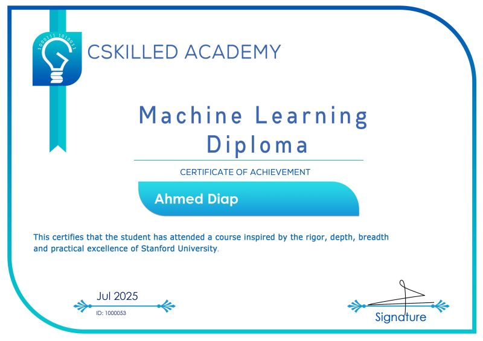
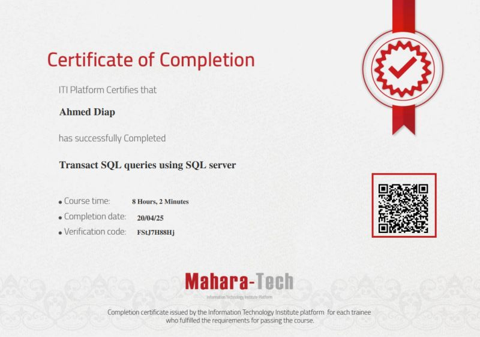
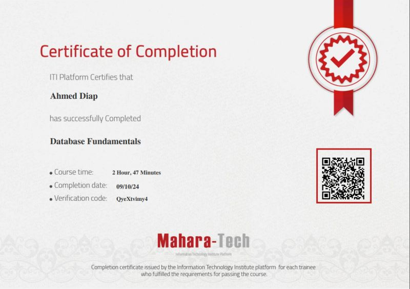
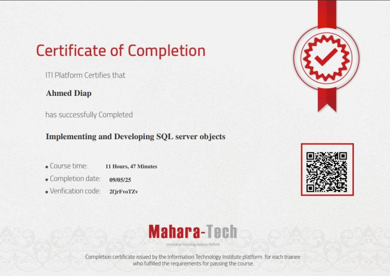
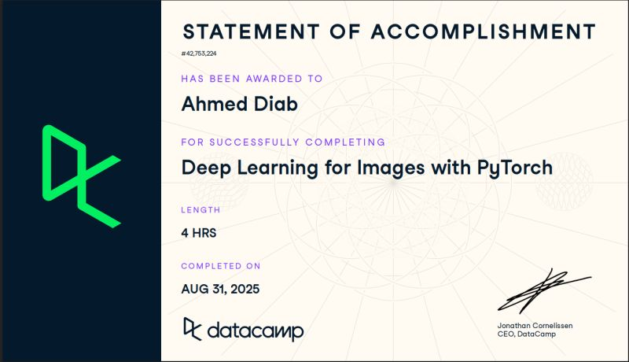
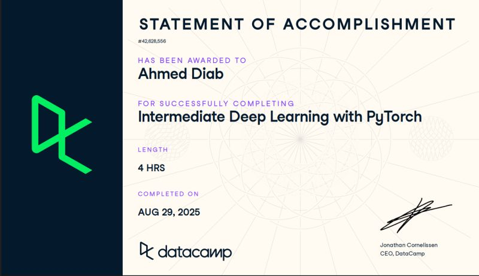
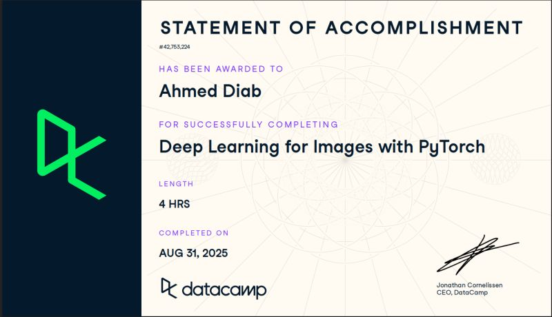
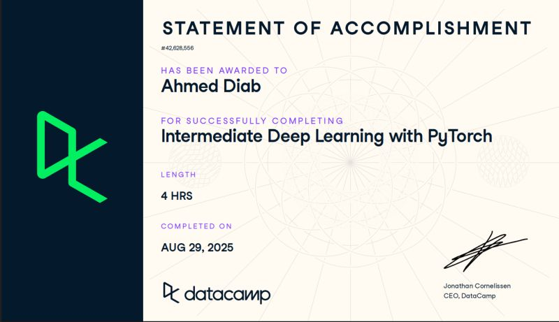

Machine Learning Certificate

What truly made this course special was how deeply it explained the low-level implementation of machine learning algorithms — learning to code them from scratch.
We covered:
- Part 1: Machine Learning
- Linear & Polynomial Regression
- Regularization (Ridge, Lasso)
- Binary & Multiclass Classification
- Neural Networks
- Unsupervised Learning (Autoencoder, K-Means, GMM)
- KNN & Probabilistic Modeling
We also learned key aspects of any ML project:
- Model Selection, Data Collection, Feature Engineering
- Data Augmentation (Synthetic Data)
- Handling Data Leakage
- Building End-to-End ML Projects
Part 2: Introduction to Deep Learning
- PyTorch Framework
- CNN, RNN, and LSTM Networks
SQL Database Certificates



I completed the “Database Fundamentals” course, where I learned DBMS principles, ERD creation, relational database design, and SQL query writing.
Then, I took “Transact SQL Queries using SQL Server” with Engineer Rami Mohamed — a comprehensive course covering everything from basics to advanced SQL concepts.
- Creating and modifying databases using T-SQL
- Filtering, sorting, and combining data using SQL operations
- Using LIKE, subqueries, set operations, and EERD modeling
- Database integrity, constraints, and indexing strategies
- Backups, snapshots, and high-availability systems (mirroring, log shipping)
- Stored procedures, triggers, and CLR-based functions
- Automation with SQL Server Management Objects (SMO)
- Dynamic report design using SSRS
- Data warehousing concepts (OLAP vs. OLTP, dimensional modeling)
Each chapter included practical, hands-on assignments to reinforce the lessons and develop real-world database expertise.
 


